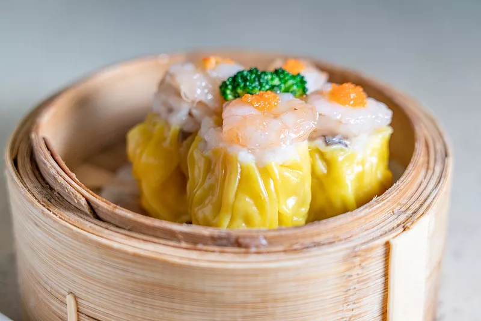

Dry steamed and sold
It is made of egg liquid dough made of skin, and the filling is useless at all, but pork, mushrooms, shrimp meat as the main filling instead, wrapped into a tube, the tight filling wrapped in a layer of egg coat, delicious and fragrant to eat, bite in the mouth, chew carefully, feel more and more fragrant